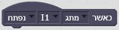
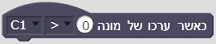

תיאור פקודות ScratchX לרובוט

אירוע זה יופעל כאשר חיישן דיגיטלי (מגע/מגנטי/אור/אינפרה-רד) המחובר בבקר לכניסת קלט (I1-I8) משנה את מצבו לנפתח (מ-1 ל-0) או לנסגר (מ-0 ל-1)

אירוע זה יופעל כאשר המספר הנוכחי השמור בקלט המונה (C1-C4) יהיה גבוה/נמוך/שווה לערך המוזן בפרמטר
אירוע זה יופעל כאשר הערך של חיישן אנלוגי (צבע/מרחק/טמפרטורה/אור) המחובר לכניסת קלט (I1-I8) הינו גבוה/נמוך/שווה לערך המוזן בפרמטר
אחזר את ערכו של קלט המונה C1-C4
אחזר את ערכו של חיישן אנלוגי (צבע/מרחק/טמפרטורה/אור) המחובר לכניסת קלט (I1-I8)
בדוק את ערכו של חיישן דיגטלי (מגע/מגנטיות/אור/אינפרה-רד) המחובר לכניסת קלט (I1-I8). יוחזר ערך בוליאני (0 או 1)
התחל לנגן את קובץ הצליל 1-29 השמור בבקר
התחל לנגן את קובץ הצליל 1-29 השמור בבקר, והמתן עד לסיומו לפני המשך ביצוע שאר הפקודות
הגדר ערך עוצמת הנורה המחוברת ליציאת פלט O1-O8
יש להגדיר ערך עוצמת אור בין 0-8. הגדרת עוצמת אור ל-0 תכבה את הנורה
אפס את ערכו של קלט המונה C1-C4
הגדר את ערך המהירות של המנוע המחובר ליציאת פלט M1-M4 לערך שבין 0-8
יש להגדיר ערך מהירות בין 0-8. הגדרת מהירות מנוע ל-0 תעצור אותו
הגדר את ערכי כיוון הסיבוב ומהירותו של המנוע המחובר ליציאת פלט M1-M4
יש להגדיר ערך מהירות בין 0-8. הגדרת מהירות מנוע ל-0 תעצור אותו
הגדר את הכיוון של סיבוב המנוע המחובר ליציאת פלט M1-M4
עצור מנוע המחובר ליציאת פלט M1-M4
פרמטר "הכל" עוצר את כל יציאות הפלט ומאפס כל הגבלת סינכרון או מרחק שהוטלה על המנועים בפקודות קודמות
הגדר את ערכי כיוון הסיבוב ומהירותו של המנוע המחובר ליציאת פלט M1-M4, ואת המרחק (מספר הצעדים) אותו יש לעבור
יש להגדיר ערך מהירות בין 0-8. הגדרת מהירות מנוע ל-0 תעצור אותו
בדיקת המרחק מתבצעת מול ערך כניסת המונה C1-C4 המחובר לחיישן האינקודר של המנוע (בהתאמה)
הדרך היחידה לשנות את המהירות בזמן הנסיעה למרחק שנקבע היא להשתמש בפקודת עצור מנוע לפני הגדרה מחודשת של המהירות
הפקודה תעבוד רק אם חיישן האינקודר של המנוע מחובר לכניסת המונה המתאימה בבקר: C1 עבור מנוע ב-M1 וכן הלאה
הגדר את ערכי כיוון הסיבוב ומהירותם של שני מנועים המחוברים ליציאות פלט M1-M4 לשם ביצוע הנעה סינכרונית של שני המנועים
יש להגדיר ערך מהירות בין 0-8. הגדרת מהירות מנוע ל-0 תעצור אותו
חובה להשתמש בפקודת "עצור מנוע - הכל" כדי לאפשר המשך עבודה עם כל מנוע בנפרד
הגדר את ערכי כיוון הסיבוב ומהירותם של שני מנועים המחוברים ליציאות פלט M1-M4 לשם ביצוע הנעה סינכרונית של שני המנועים, והגדר את המרחק אותו יש לעבור
יש להגדיר ערך מהירות בין 0-8. הגדרת מהירות מנוע ל-0 תעצור אותו
בדיקת המרחק מתבצעת מול ערך כניסת המונים C1-C4 המחוברים לחיישני האינקודרים של המנועים (בהתאמה)
הפקודה תעבוד רק אם חיישני האינקודרים של המנועים מחוברים לכניסות המונים המתאימים בבקר: C1 עבור מנוע ב-M1 וכן הלאה
חובה להשתמש בפקודת "עצור מנוע - הכל" כדי לאפשר המשך עבודה עם כל מנוע בנפרד
הגדר את סוג החיישן המחובר לכניסת הפלט I1-I8
חובה להגדיר בתסריט את סוג החיישן על מנת שהסביבה תדע כיצד יש לעבוד איתו ויתקבלו ממנו ערכים מתאימים
אפס את הבקר - כל ערכי כניסות הקלט ויציאות הפלט יאותחלו